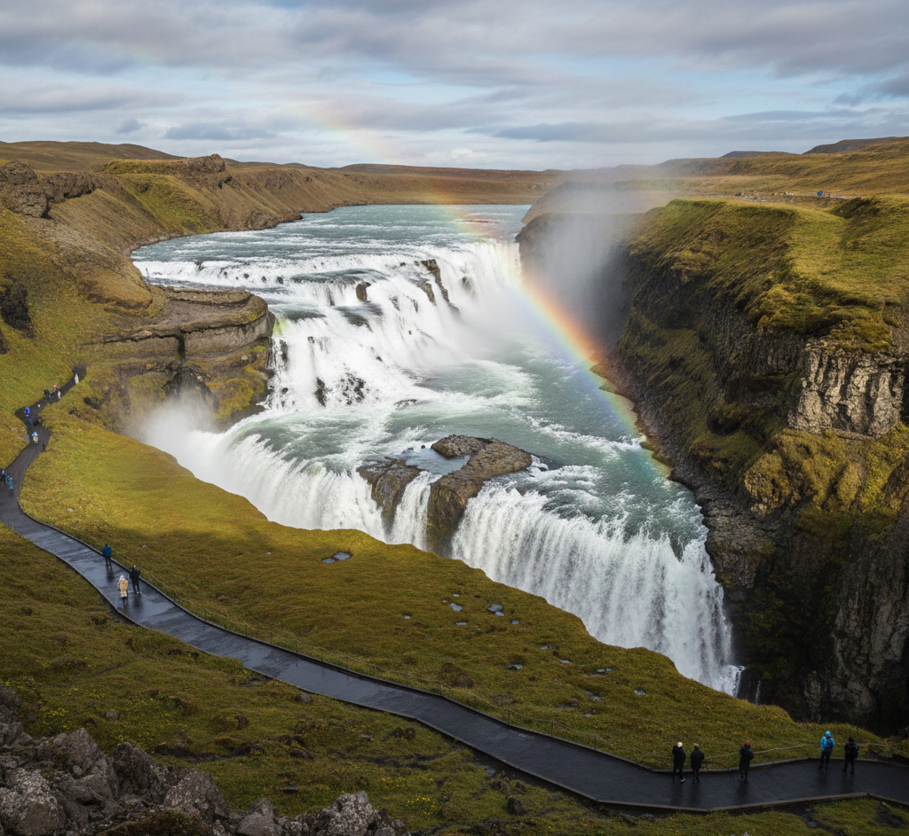
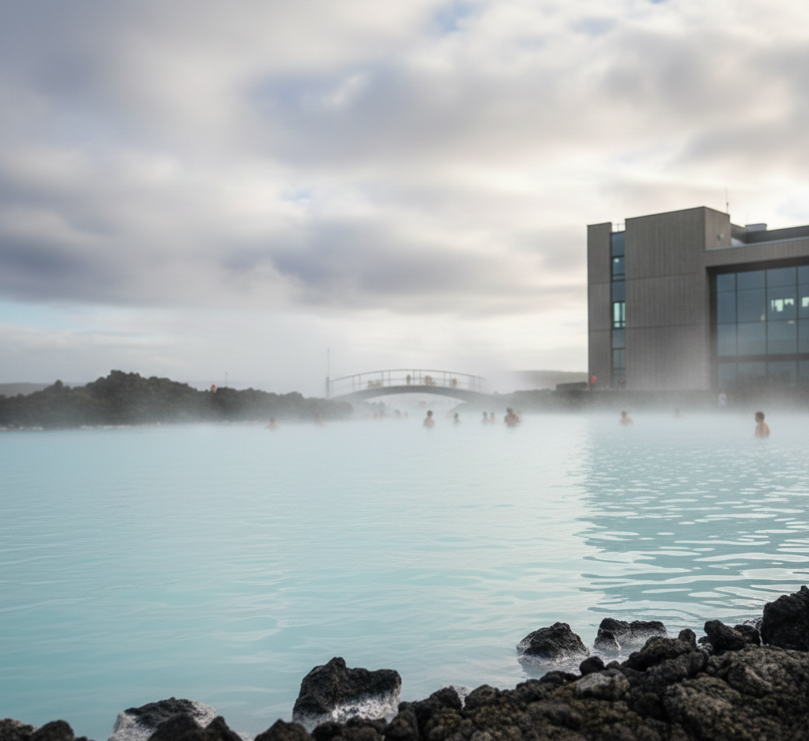
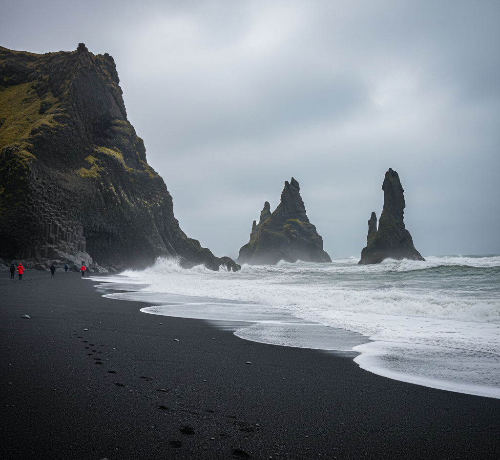
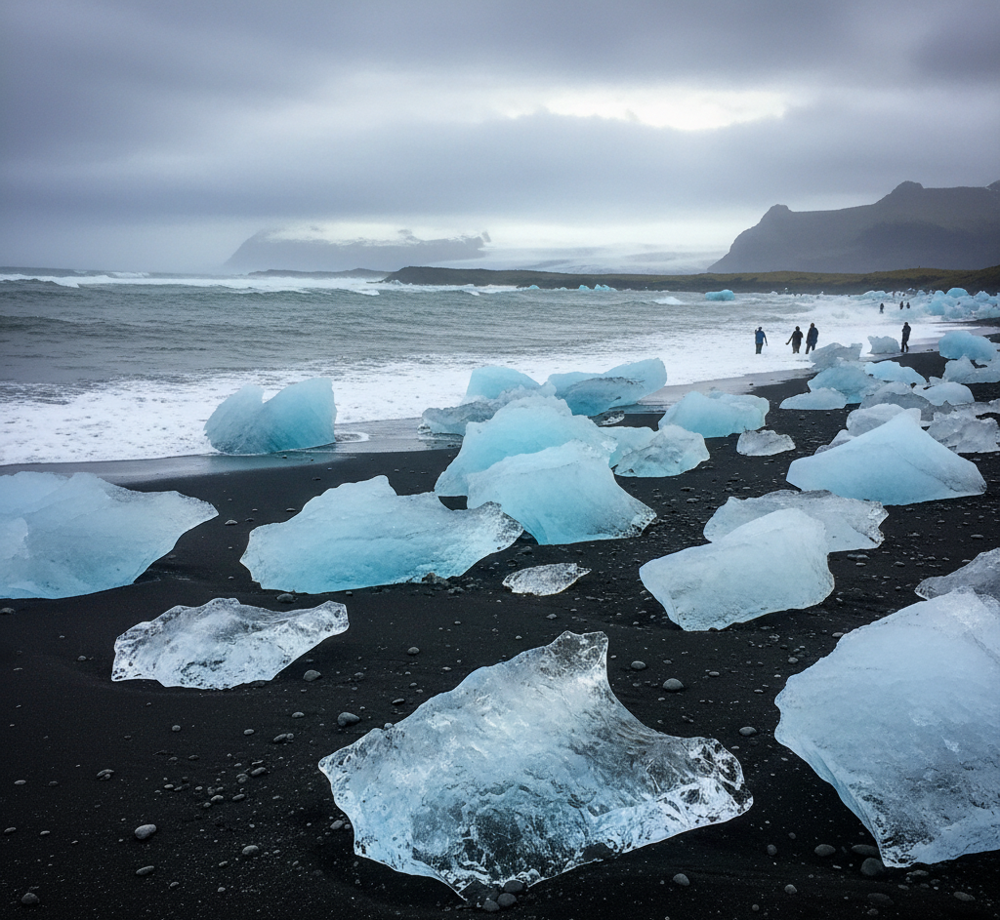
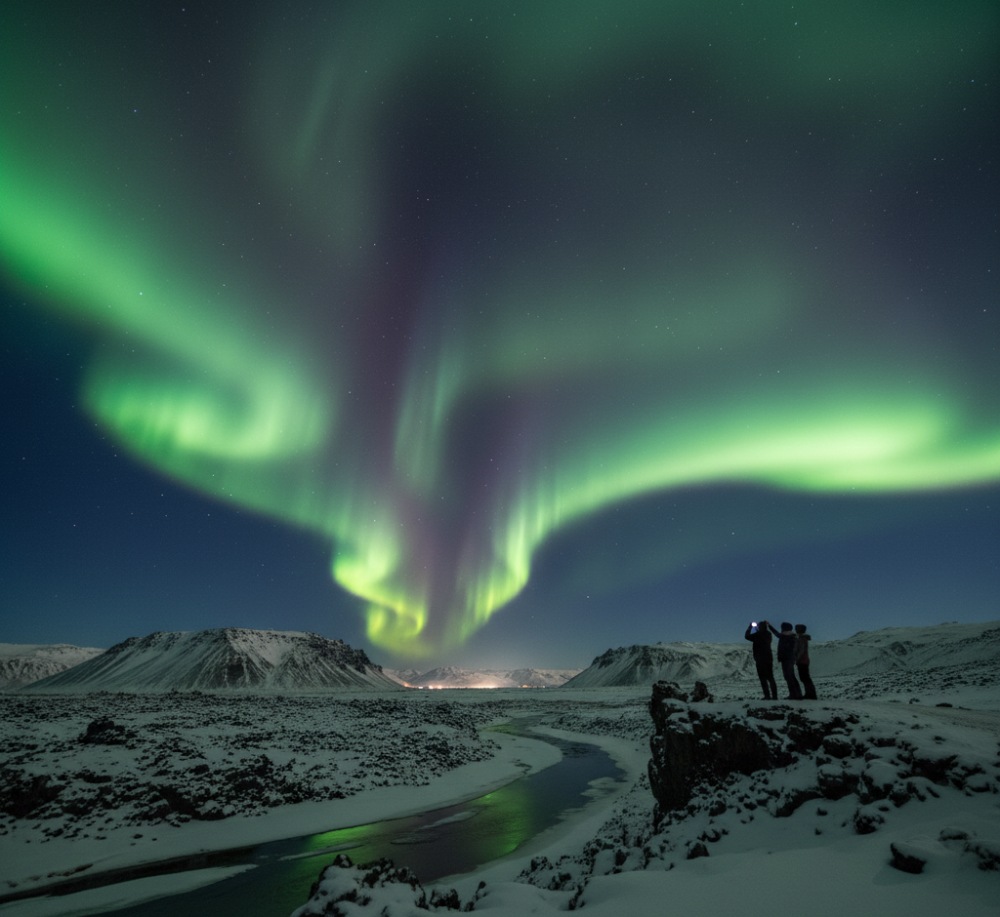

|

|
1. El Cercle Daurat (The Golden Circle)
El Cercle Daurat és la ruta turística més popular i accessible des de la capital, Reykjavík, i concentra tres de les meravelles naturals més icòniques d'Islàndia. És perfecte per a una excursió d'un dia.
Parc Nacional de Þingvellir (Thingvellir): Un lloc d'una gran importància històrica i geològica. És on es va fundar l'antic parlament islandès (Alþingi) l'any 930 dC. A més, és visible la separació de les plaques tectòniques nord-americana i eurasiàtica.
Zona Geotèrmica de Haukadalur (Geysir): Aquesta zona acull el Gran Geysir (que dona nom a tots els guèisers del món, però que actualment erupciona poques vegades) i el seu veí, Strokkur, que esclata regularment cada pocs minuts, llançant aigua bullent fins a 15-20 metres d'alçada.
Cascada de Gullfoss: Coneguda com la "Cascada d'Or," és una de les cascades més impressionants d'Islàndia, amb un doble salt d'aigua sobre un canó de 32 metres.
|
|

|
2. La Llacuna Blava (Blue Lagoon)
Una de les icones més reconegudes d'Islàndia. Aquest balneari geotèrmic és famós per les seves aigües de color blau lletós i riques en minerals (sílice i sofre), conegudes per les seves propietats terapèutiques. És el lloc ideal per relaxar-se envoltats d'un paisatge volcànic.
Nota: Cal reservar l'entrada amb antelació, ja que és molt popular.
|
|

|
3. La Costa Sud:
Cascades i Platges Negres
La costa sud és una successió ininterrompuda de paisatges espectaculars que es poden recórrer fàcilment per la carretera principal (Ring Road).
Cascada de Seljalandsfoss: L'única cascada d'Islàndia per la qual es pot caminar darrere, oferint una perspectiva única i espectacular (compte amb mullar-vos!).
Cascada de Skógafoss: Una potent i ampla caiguda d'aigua de 60 metres, on sovint es forma un arc de Sant Martí en els dies assolellats.
Platja de Sorra Negra de Reynisfjara: Amb la seva sorra volcànica d'un negre intens, les imponents columnes de basalt anomenades Hálsanef i els illots Reynisdrangar emergint del mar, és un lloc de bellesa salvatge i inquietant.
|
|

|
4. Jökulsárlón i la Platja dels Diamants
A l'extrem sud-est, trobem una de les imatges més màgiques d'Islàndia: la llacuna glacial de Jökulsárlón.
Jökulsárlón: Icebergs gegants, que s'han desprès del glaciar Vatnajökull, suren lentament cap a l'oceà. És habitual veure foques nedant entre el gel.
La Platja dels Diamants (Diamond Beach): Just a l'altra banda de la carretera, els trossos de gel que han estat arrossegats per l'oceà tornen a la costa, semblant diamants brillants sobre la sorra negra.
|
|

|
5. Cerca de l'Aurora Boreal
Islàndia és un dels millors llocs del món per presenciar l'espectacle celestial de l'Aurora Boreal (Northern Lights).
Quan: L'aurora és visible durant els mesos d'hivern (de setembre a abril), ja que es requereix foscor total.
On: Lluny de la contaminació lumínica de Reykjavík. Els llocs com Þingvellir o qualsevol punt fosc de la Ring Road són ideals. Consulteu sempre la previsió d'aurora i la cobertura de núvols.
|